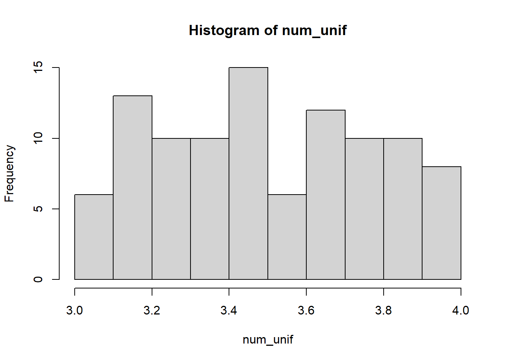
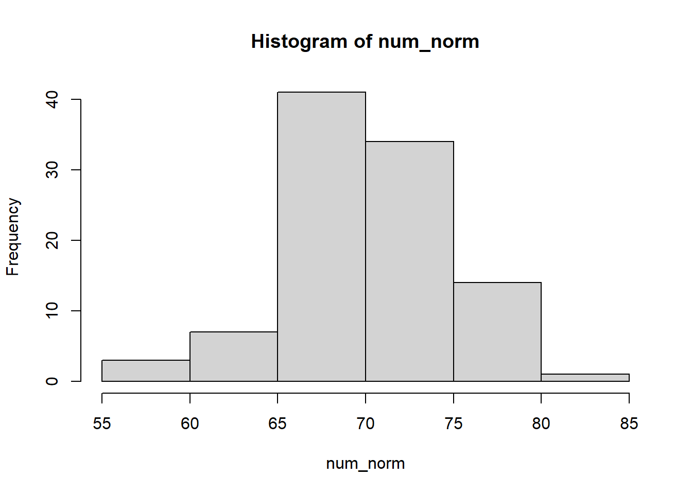

| Clase | Ejemplo |
|---|---|
| numérico | 12.3, 5, 999 |
| caracter | hola, JUAN |
| lógica | TRUE, FALSE |
| fecha | 2021-05-06 |
3 Tipos de datos
En términos genéricos, todos los elementos que maneja R se consideran objetos: un valor numérico, un vector, una función, una base de datos, un gráfico, todos son objetos.
Uno de los típicos errores que se nos presenta al usar R es el mal uso de las distintas clases de objetos que manipulamos en nuestras sesiones de trabajo.
Para un procesamiento correcto, un lenguaje de programación debe saber qué se puede y qué no se puede hacer con un valor en particular. Por ejemplo, no se pueden hacer operaciones matemáticas con las palabras “hola” y “mundo”. Del mismo modo, no puede cambiar los números 1 y -34.5 de minúsculas a mayúsculas. Debido a esto, R tiene una característica llamada tipos de datos.
Principales tipos de datos que vamos a usar:
3.1 Vectores
La unidad básica de datos en R es un vector, los cuales pueden ser de diferentes clases. Los que más usaremos son las siguientes clases.
vector <- c(Concatenación, de, elementos, atómicos)
raices_largo <- c(8.5, 9, 11)Hay muchas funciones que nos permiten inspeccionar los datos. Una muy versatil es str()
str(raices_largo) num [1:3] 8.5 9 11length(raices_largo)[1] 3Supongamos que “raices_largo” es una muestra de la variable largo de raiz de trigo en cm y nos interesaria algunas métricas
summary(raices_largo) Min. 1st Qu. Median Mean 3rd Qu. Max.
8.50 8.75 9.00 9.50 10.00 11.00 …descomponiendo ´summary´
- Medidas de posición
mean(raices_largo)[1] 9.5median(raices_largo)[1] 9quantile(raices_largo, 0.25) 25%
8.75 - Medidas de dispersión
min(raices_largo)[1] 8.5max(raices_largo)[1] 11range(raices_largo)[1] 8.5 11.0var(raices_largo)[1] 1.75sd(raices_largo) # sqrt(var(raices_largo))[1] 1.322876En estadística, cuando se desea hacer referencia a la relación entre el tamaño de la media y la variabilidad de la variable, se utiliza el coeficiente de variación (suele representarse por las siglas “C.V.”). Es adimensional, o sea no tiene unidades y suele expresarse en %.
cv <- sd(raices_largo) / mean(raices_largo) * 100
cv[1] 13.92501Ahora, imaginemos que el “cv” es una función que usaremos a diario en nuestro trabajo. Por lo tanto quisiéramos tenerla mas “a mano” para usarla en cualquier momento.
cv <- function(x){
sd(x)/mean(x)*100
}
raices_largo <- c(8.5, 9, 11)
cv(raices_largo)[1] 13.92501Ahora bien, supongamos que queremos tener esta función (y muchas otras mas, de mayor complejidad incluso) disponibles desde el inicio de nuestra sesión de trabajo… Deberíamos “empaquetar” todas esas funciones y llamarlas con un breve código.
source("my_fun.R")raices_largo - 1[1] 7.5 8.0 10.0sum(raices_largo)[1] 28.5cumsum(raices_largo)[1] 8.5 17.5 28.5Caracter
Almacena valores de “caracteres” o “cadenas” (en inglés “string”): pueden contener letras, números y símbolos. La forma más sencilla de indicar que un valor es de tipo carácter es colocar el valor entre comillas simples o dobles.
vec_car <- c("Hola mundo", "2022-20-04", '2022')
str(vec_car) chr [1:3] "Hola mundo" "2022-20-04" "2022"Lógicos
El tipo de dato lógico o booleano es en computación aquel que puede representar valores de lógica binaria, esto es 2 valores: falso o verdadero
vec_logi <- c(FALSE, TRUE, F, T) # logi <- false
str(vec_logi) logi [1:4] FALSE TRUE FALSE TRUEFechas
- El formato default es yyyy-mm-dd
vec_fechas <- as.Date(c("2007-06-22", "2004-02-13"))
str(vec_fechas) Date[1:2], format: "2007-06-22" "2004-02-13"vec_fechas - 1 [1] "2007-06-21" "2004-02-12"
Note
Nosotros comúnmente usamos ‘dd/mm/yyyy’, como podemos convertir:
vec_fechas2 <- c("01/06/2020", "31/12/2020")
str(vec_fechas2) # son caracteres! chr [1:2] "01/06/2020" "31/12/2020"vec_fechas3 <- as.Date(vec_fechas2, "%d/%m/%Y") # con paquete base
str(vec_fechas3) Date[1:2], format: "2020-06-01" "2020-12-31"vec_fechas4 <- lubridate::dmy(vec_fechas2) # con lubridate!
str(vec_fechas4) Date[1:2], format: "2020-06-01" "2020-12-31"diff(vec_fechas4)Time difference of 213 days- Forzando las clases explícitamente
raices_car <- as.character(raices_largo)
str(raices_car) chr [1:3] "8.5" "9" "11"vec_logi2 <- as.logical(c(0,1))
vec_logi2[1] FALSE TRUEvec_logi_num <- as.numeric(vec_logi)
vec_logi_num[1] 0 1 0 1- Existe una jerarquia a la hora de R tener que decidir de qué tipo de vector se trata (“piedra, papel o tijera”)
y1 <- c(1.7, "a") ## character
str(y1) chr [1:2] "1.7" "a"y2 <- c(TRUE, "a") ## character
str(y2) chr [1:2] "TRUE" "a"y3 <- c(TRUE, 0, 10) ## numeric
str(y3) num [1:3] 1 0 10:::
3.2 Factores
En R las variables categóricas se almacenan como factores tanto sea para vectores que contienen caracteres o numéros. Uno de los usos más importantes de los factores es en el modelado estadístico, asumiendo un rol de variable categorica, diferente de las variables contínuas. Claro ejemplo de factores son los tratamientos, por ej: genotipos, bloques, etc.
A diferencia de los vectores vistos anteriormente, todo factor tiene sus niveles (levels), que por default se ordenan alfabéticamente.
geno <- c("control", "B35", "A12", "control", "A12", "B35", "A12", "B35", "control")
str(geno) chr [1:9] "control" "B35" "A12" "control" "A12" "B35" "A12" "B35" ...levels(geno)NULLgeno_f <- factor(geno)
str(geno_f) Factor w/ 3 levels "A12","B35","control": 3 2 1 3 1 2 1 2 33.3 Secuencias
Numéricas
1:7 [1] 1 2 3 4 5 6 7seq(from = 0, to = 20, #by=2) #
length=4) [1] 0.000000 6.666667 13.333333 20.000000rep(1:3, times=3) # , each=3 [1] 1 2 3 1 2 3 1 2 3Letras
LETTERS [1] "A" "B" "C" "D" "E" "F" "G" "H" "I" "J" "K" "L" "M" "N" "O" "P" "Q" "R" "S"
[20] "T" "U" "V" "W" "X" "Y" "Z"rep(c("a","b", "c"), times=3) # , each=3 [1] "a" "b" "c" "a" "b" "c" "a" "b" "c"Fechas
seq(as.Date("2015-01-15"), as.Date("2015-12-15"), "1 month") [1] "2015-01-15" "2015-02-15" "2015-03-15" "2015-04-15" "2015-05-15"
[6] "2015-06-15" "2015-07-15" "2015-08-15" "2015-09-15" "2015-10-15"
[11] "2015-11-15" "2015-12-15"3.4 Números aleatorios
La generación de números aleatorios es en muchas ocasiones un requerimiento esencial en investigación científica. Proceder de este modo puede reducir cualquier sesgo generado por nuestra persona a la hora de seleccionar una muestra, o aplicar un tratamiento a una unidad experimental.
- Generar números enteros de modo aleatorio de una muestra determinada
sample()
set.seed(123)
sample(1:30, size=10, replace=F) #sin reposición [1] 15 19 14 3 10 18 22 11 5 20- Generar números aleatorios de una distribución específica de parámetros conocidos:
runif() - números racionales aleatoriamente, uniformemente distribuidos en un intervalo
num_unif <- runif(100, min=3, max=4)
hist(num_unif)
rnorm() - números aleatorios, pertenecientes a una población con distribución normal, con parámetros μ y σ.
num_norm <- rnorm(100, mean=70, sd=5)
hist(num_norm)
3.5 Valores especiales
Existen valores reservados para representar datos faltantes, infinitos, e indefiniciones matemáticas.
- NA (Not Available) significa dato faltante/indisponible. El NA tiene una clase, o sea, pueden ser NA numeric, NA character, etc.
y <- c(2, 4, NA, 6)
is.na(y)[1] FALSE FALSE TRUE FALSElength(y)[1] 4Calcule el promedio de y (use la ayuda de R en caso necesario)
mean(y)
- NaN (Not a Number) es el resultado de una operación matemática inválida, ej: 0/0 y log(-1). Un NaN es un NA, pero no recíprocamente.
0/0[1] NaNis.nan(0/0)[1] TRUEis.na(0/0)[1] TRUENULLes el vacío de R. Es como si el objeto no existiese
a = NULL
aNULLInf(infinito). Es el resultado de operaciones matemáticas cuyo límite es infinito, es decir, es un número muy grande, por ejemplo, 1/0 o 10^310. Acepta signo negativo -Inf.
1/0[1] Inf1/Inf[1] 0